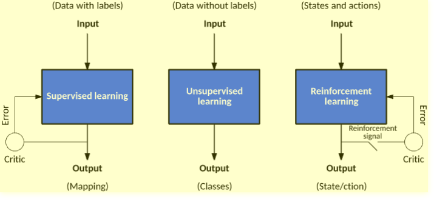

Aprendizagem por Reforço

- A aprendizagem por reforço é um método de aprendizagem sobre o que fazer de forma a maximizar um valor numérico de prémio;
- Não é dito ao aprendiz que ações deve efetuar;
- Deve descobrir quais as ações que garantem o melhor retorno, tentando abordá-las.
- Características essenciais:
- Tryal-and-error;
- Delayed reward.
- Características complementares:
- Tempo;
- Existe um aprendiz, mas não um professor.
- Não é definido pela caracterização de métodos de aprendizagem (não programamos algoritmos para aprender);
- É definido pela caracterização do problema de aprendizagem (programamos as características do problema que pretendemos aprender);
- Não toma decisões com base em experiências passadas (ao contrátrio das CBR ou ANN);
- Olha para o estado atual e decide o que fazer, prevendo o futuro expectável.
Aplicações
- Robótica para automação da indústria;
- Planeamento de estratégia de negócio;
- Machine Learning e processamento de dados;
- Ajuda na criação de sistemas de treino que providenciam instruções personalizadas e materiais de acordo com os requisitos dos estudantes;
- Controlo aéreo e controlo de movimentos de robots;
- Carros autónomos.
Quando não usar?
- Quando temos dados suficientes para resolver o problemas com um método de aprendizagem supervisionada;
- Aprendizagem por reforço é computacionalmente pesada e consome muitp tempo, especialmente, quando o espaço de ação é grande.
Termos
- Agente (\( A \)): Entidade assumida que toma ações num ambiente de forma a ganhar algum prémio;
- Ambiente (\( e \)): Cenário que um agente tem de enfrentar;
- Prémio (\( R \)): Retorno imediata dado a um agente quando toma uma ação específica ou executa uma tarefa;
- Estado (\( S \)): Refere-se à situação atual retornada pelo ambiente;
- Política (\( \pi \)): Estratégia a ser aplicada pelo agente de forma a decidir a próxima ação baseada no estado atual;
- Valor (\( V \)): Retorno esperado a longo-prazo tendo um desconto quando comparado ao prémio a curto-prazo;
- Função Valor: Especifica o valor de um estado que é o valor total do prémio. Pode ajudar o agente acerca do caminho que este deve tomar;
- Modelo do Ambiente: Imita o comportamento do ambiente. Ajuda a fazer inferências e a determinar como o ambiente se irá comportar;
- Métodos baseados em modelos: Método para resolver problemas de aprendizagem por reforço que utilizam model-based methods;
- Q value ou action value (\( Q \)): Muito semelhante ao valor. A única diferença entre os dois é que tem um parâmetro adicionar, a ação atual.
Procedimento
- Agente toma ações no ambiente;
- Ambiente dá-lhe um prémio/penalty;
- Agente calcula a conveniência da ação;
- Agente toma uma nova ação no novo ambiente.
Assim:
- O ciclo de vida produz uma sequência de estados, \( S_i \), ações \( A_i \) e prémios imediatos, \( R_i \);
- Cada vez que um agente toma uma ação no ambiente, é-lhe fornecido um prémio ou uma penalty demonstrando o quão desejada era a sua ação;
- A função do agente é aprender a política de controlo, \( \pi: S \rightarrow A \), que maximiza a soma (expectável) de prémios, sendo que os prémios futuros serão descontados de forma exponencial em relação ao seu delay: \( \sum_{i = 0}^b \gamma^i R_i \)
Trade-off Exploitation/Exploration
- Exploration: é acerca de encontrar mais informações acerca do ambiente, ou seja, explorar muitos estados e ações no ambiente;
- Exploitation: é acerca de dar exploit acerca de informação conhecida para maximizar o prémio.
Se selecionarmos uma ação greedy, estaremos a dar exploit do conhecimento atual acerca do valor das ações.
Se selecionarmos uma ação não-greedy, entaõ estaremos a explorar, visto que isto providencia que melhoremos a nossa estimativa dos valores da ação não-greedy.
Cálculo do Q-Value
- Temporal Difference Learning:
- O agente começa por assumir que todos os estados e todas as ações têm um valor inicial de 0;
- O agente atualiza os valores calculando a diferença entre o valor esperado e o valor encontrado.
- Q-Learning:
- \( Q(s_t, a_t) \): valor de tomar uma ação \( a_t \) num estado \( s_t \);
- \( r_{t+1} \): recompoensa imediata;
- \( \alpha \): taxa de aprendizagem, \( 0 \lt \alpha \lt \lt 1 \);
- Proporção usada para atualizar o valor de utilidade após cada ação.
- \( \gamma \): fato de desconto, \( 0 \lt \lt \gamma \lt 1 \);
- Encoraja o agente a preferir recompensas imediatas a tardias.
- \( Q(s_t, a_t) = Q(s_t, a_t) + \alpha[r_{t+1} + \gamma \times Q(s_{t + 1}, a_{t + 1}) - Q(s_t, a_t)] \).
Q-Learning vs SARSA
- SARSA:
- \( Q(s_t, a_t) = Q(s_t, a_t) + \alpha[r_{t + 1} + \gamma \times Q(s_{t + 1}, a_{t + 1}) - Q(s_t, a_t)] \).
- O agente está no estado 1, realiza a ação 1 e obtém a recompensa 1;
- No estado 2, realiza a ação 2 e obtém a recompensa 2 e ,então, atualiza o valor da ação 1 no estado 1.
- \( Q(s_t, a_t) = Q(s_t, a_t) + \alpha[r_{t + 1} + \gamma \times Q(s_{t + 1}, a_{t + 1}) - Q(s_t, a_t)] \).
- Q-Learning:
- \( Q(s_t, a_t) = Q(s_t, a_t) + \alpha[r_{t + 1} + \gamma \times MAX_a\ Q(s_{t + 1}, a_{t + 1}) - Q(s_t, a_t)] \);
- O agente está no estado 1, realiza a ação 1 e obtém a recompensa 1;
- Vê a recompensa máxima no estado 2 e atualiza o valor da ação 1 realizado no estado 1.
- \( Q(s_t, a_t) = Q(s_t, a_t) + \alpha[r_{t + 1} + \gamma \times MAX_a\ Q(s_{t + 1}, a_{t + 1}) - Q(s_t, a_t)] \);
- O SARSA considera a política de controlo que está a ser seguida e atualiza o valor das ações;
- O Q-Learning assume que está sempre a seguir uma política ótima e utiliza-a para atualização.